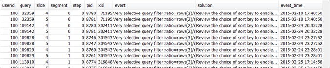

クエリアラートの確認
STL_ALERT_EVENT_LOG システムテーブルを使用し、クエリの潜在的なパフォーマンスの問題を特定して解決するには、以下の手順を実行します。
-
次の操作を実行してクエリ ID を調べます。
select query, elapsed, substring from svl_qlog order by query desc limit 5;substringフィールドで切り捨てられたクエリテキストを調べ、選択するquery値を特定します。クエリを複数回実行した場合、query値が小さい行のelapsed値を使用します。これは、コンパイル済みバージョンの行です。多くのクエリを実行している場合、クエリが確実に含められるように、LIMIT 句により使用される値を大きくすることができます。 -
クエリの STL_ALERT_EVENT_LOG から行を選択します。
Select * from stl_alert_event_log where query = MyQueryID; -
クエリの結果を評価します。次の表を使用して、特定した問題の考えられる解決策を見つけます。
注記
すべてのクエリに STL_ALERT_EVENT_LOG の行があるとは限りません。問題が特定されたクエリのみです。
問題 イベント値 ソリューション値 推奨される解決策 クエリ内のテーブルの統計がないか古い。 クエリプランナー統計がない ANALYZE コマンドを実行する 「テーブル統計がないか古い」を参照してください。 クエリプランにネステッドループ結合 (最適性が最も低い結合) がある。 クエリプラン内にネストッドループ結合 結合述語を確認してデカルト積を回避する 「Nested Loop」を参照してください。 削除済みだがバキューム未処理としてマークされた比較的多数の行、または挿入済みだがコミットされていない比較的多数の行がスキャンによってスキップされた。 多数の削除された行がスキャンされた VACUUM コマンドを実行して削除されたスペースを回復する 「非実体行または未コミット行」を参照してください。 ハッシュ結合または集計で 100 万を超える行が再分散された。 多数の行がネットワーク全体に分散された : 集計を処理するために RowCount 行が分散された 分散キーの選択を確認して、結合または集計をコロケーションする 「十分最適でないデータ分散」を参照してください。 ハッシュ結合で 100 万を超える行がブロードキャストされた。 多数の行がネットワーク全体にブロードキャストされた 分散キーの選択を確認して結合をコロケーションし、分散されたテーブルの使用を検討する 「十分最適でないデータ分散」を参照してください。 内部テーブル全体が単一ノードに再分散されたために直列実行を強制する、DS_DIST_ALL_INNER 再分散スタイルがクエリプランで指定されました。 クエリプラン内のハッシュ結合の DS_DIST_ALL_INNER 分散戦略の選択を確認し、外部テーブルではなく内部テーブルを分散する 「十分最適でないデータ分散」を参照してください。